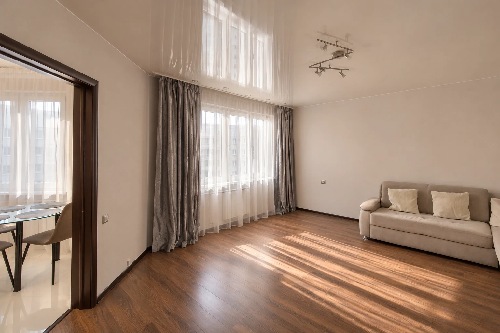

ВАШ БУДУЩИЙ ДОМ
Продаётся современная двухкомнатная квартира в доме 2009 года постройки у Лахтинского Разлива в Приморском районе.
— Общая площадь 62,4 м². — Две комнаты: 20,91 и 15,52 м². — Кухня 10,66 м². — Большой совмещённый санузел. — Балкон с панорамным остеклением и выходом из спальни. — 12-й этаж, потолки 2,65 м.
В квартире был сделан качественный ремонт. Встроенная кухня, вся мебель и встроенные шкафы, встроенная европейская техника (холодильник, посудомоечная машина, свеч, духовой шкаф, стир.машина, тв) остаются покупателю. Регулируемый тёплый пол в прихожей и с/у. Никаких обязательных ремонтных проектов после получения ключей — можно сразу обустраиваться.
Особенность этой локации — вода и парки рядом с домом, в шаговой доступности метро Беговая.
Всего 5 минут пешком до набережной Лахтинского разлива. Парк 300-летия Санкт-Петербурга, «Питерлэнд» и Лахта Центр — рядом. Прогулки, спорт и отдых на свежем воздухе легко становятся частью обычного дня.
Для семей с детьми: • Детский сад в 3 минуты пешком от подъезда. • Инженерно-техническая школа № 777 в соседнем дворе. • Детские и спортивные площадки.
До метро «Беговая» — около 15 минут пешком. Рядом остановки общественного транспорта, удобный выезд на ЗСД и КАД.
В доме есть подземный паркинг.
Юридическая информация: один взрослый собственник, без обременений. Материнский капитал при покупке не использовался.
Квартира подойдет для одного человека, пары или семьи с ребенком, которые хотят больше комфорта, сохранив преимущества жизни в Приморском районе.
Звоните и приходите на просмотр. Возможно, следующий адрес, который вы назовете своим домом, уже найден.
